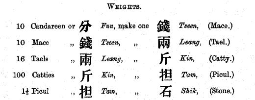
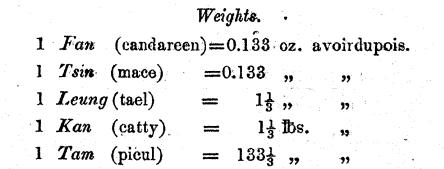

[Of] that which measuring weight beginneth from:
beginneth [it] from millet.
稱： measuring weight; or weighing 稱、平聲、Cantonese: ch'ing1 (post-merger: ts'ing1), Mandarin: chēng
(But in modern Cantonese, read 去聲ch'ing3 for 秤.)
起： beginneth from; lit. ariseth from
黍： millet 黍、音暑、Cantonese: shü2, Mandarin: shǔ Shu (黍).
十黍為一絫， 十絫為一銖， 二十四銖為一兩， 十六兩為一斤， 三十斤為一鈞， 四鈞為一石。
Ten millets make one pile;
ten piles make one dram;
twenty-four drams make one tael;
sixteen taels make one catty;
thirty catties make one quarter;
four quarters make one stone.
絫： pile 絫，魯水切，Cantonese: l_ü5, Mandarin: lěi Lei (絫).
Difficult to render because Chinese dictionaries
simply define it as ten shu (黍).
I have taken "pile" from the interchangeable 累, "to accumulate/pile/heap".
兩：tael Liang (兩).
One sixteenth of a catty,
except in Mainland China where it has been metricised to a tenth,
thus ruining the phrase 半斤八兩, "half [a] catty [is] eight taels".
斤：catty Kin (斤).
Of the order one pound, or half a kilogram.
鈞： quarter 鈞，音均，Cantonese: kwan1, Mandarin: jūn Kün (鈞).
A quarter of the shih (石) or "stone" below,
and of similar weight to the imperial quarter (28 pounds).
Difficult to render otherwise
since Chinese dictionaries simply define it as thirty catties.
石：lit. stone Shih (石).
This is a literal rendering.
The Chinese stone shih (石) is of the order 120 pounds,
making it closer to the imperial hundredweight
than the much lighter imperial stone (14 pounds).
Extended commentary
I can't be bothered looking up a reputable source
for the precise weight of a kin (斤) or catty
when Sun Tzŭ's Computational Classic was first written,
but using 600 grams as an estimate,
we have:
By the later part of the Ts'ing Dynasty,
one kin (斤) or catty is 1⅓ pounds in Hong Kong,
locally called a kan (斤).
As with length units,
Ordinance No. 22 of 1844 (PDF) of Hong Kong
gives the relevant conversions between the Chinese units themselves
(here, candareen and mace are used rather than "piles" and "drams"):

And likewise they are only standardised
with reference to English units forty years later,
in Ordinance No. 8 of 1885 (PDF)
(note the typo in the definition of candareen):

Eventually the kan (斤) or catty is given the
almost equivalent definition of 0.60478982 kg,
used unto this day in Hong Kong street markets;
see Cap. 68 Weights and Measures Ordinance.